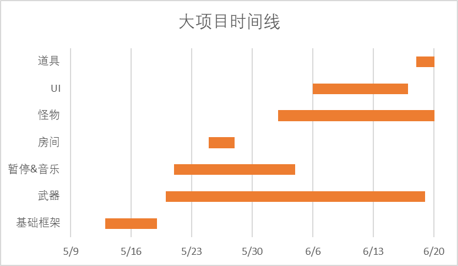

项目介绍
时间规划

| 时间 | 进度 |
|---|---|
| 第一周 | 基础框架（人物、地图、物理引擎） |
| 第二周 | 部分武器、部分暂停 |
| 第三周 | 互动和房间、添加音乐 |
| 第四周 | |
| 第五周 | 武器、怪物基本完工 |
| 第六周 | UI |
分工
| 名字 | 分工 | 比例 |
|---|---|---|
| 曾富楠 | 人物、地图、封装物理引擎 | 25% |
| 安江涛 | 怪物（及对应武器）、暂停 | 25% |
| 李沁心 | 武器 | 25% |
| 香宁雨 | 音乐、UI、道具 | 25% |
开发难点
- 问题：cocos2d-x引擎加载的瓦片地图难以注入代码；解决：利用每个节点都有的Component，把对应的互动作为
Component的衍生来存储于地图的对应图块 - 问题：难以寻找并处理地图中的房间；解决：地图中预先标记类别为"room"的图块，读取时将其作为一个房间的内侧。
- 问题：地图预处理时产生的房间
Room在返回的过程中多次利用移动语义转手，指针不定；解决：每个房间存储一个指向自己的unique_ptr<Room>，需要引用房间时使用对应的双重指针Room**。 - 问题：cocos2d-x的物理引擎包装过于严密，难以使用；解决：重新包装chipmunk引擎。
- 问题：包装时产生的物理空间Space和物理刚体Body互相引用，难以析构；解决：每个刚体存储一个
shared_ptr<Space>，保证物理空间在物理刚体之后析构。